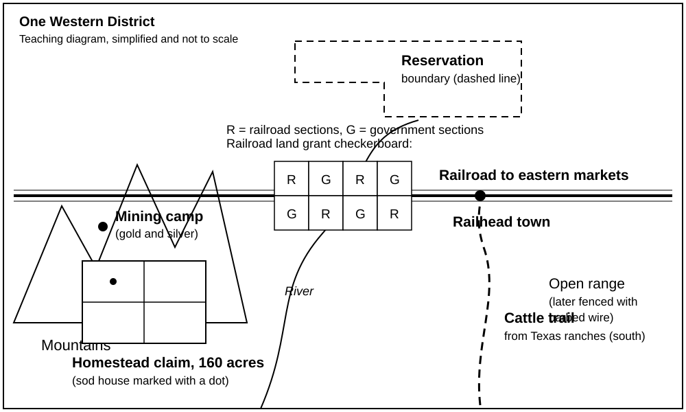
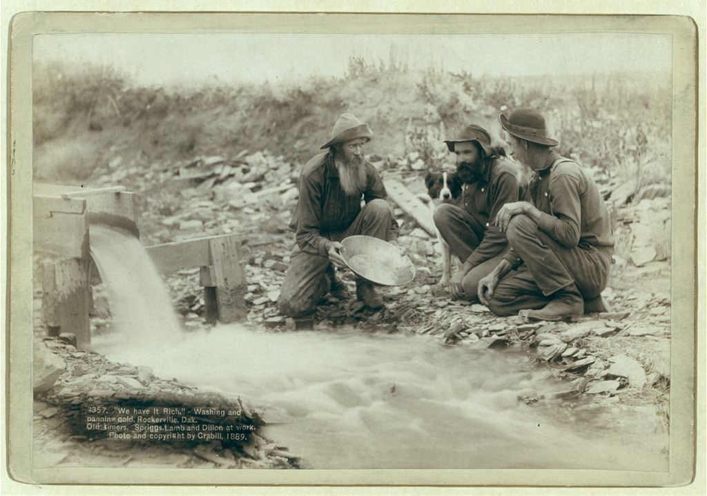
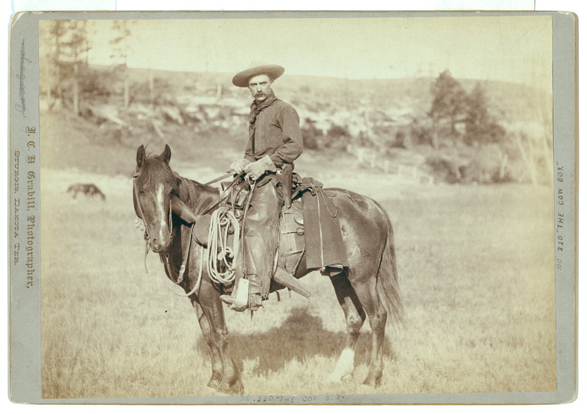

Directions: Study the teaching diagram of one western district, then work through all five stations. Each station zooms in on one feature of the same map. At the end, use the whole map to judge how one federal policy could create opportunity and conflict at the same time.

Source: Photograph by John C. H. Grabill, 1889, Library of Congress.

Find the mining camp in the mountains on the diagram. A strike here starts a mining boom. Prospectors arrive first, then merchants, freight wagons, and a railroad spur are demanded. The camp sits in the same mountains where the river on the diagram begins, so the camp needs water for washing ore and timber for mine supports.
What does the photograph show about the work of mining at the start of a boom, before large companies take over?
On the diagram, which two other features will the mining camp come into conflict with, and why?
Source: Photograph by John C. H. Grabill, about 1888, Library of Congress.

Trace the dashed cattle trail on the diagram from the south to the railhead town. Herds walked this route because the railroad did not yet reach the Texas ranches. The trail had to cross open range, reach water, and end at a place where cattle could be loaded onto trains.
Why did the cattle drive end at a railhead town instead of continuing all the way to an eastern city?
Name two things on the diagram that could block or end this trail, and explain how each one works.
Source: The checkerboard squares at the center of the teaching diagram.
Along the railroad line, the diagram shows alternating sections marked R and G. The R sections are the land grant: public land given to the railroad to support construction. The railroad could sell those sections or use them as security for loans. The G sections stayed with the government, which expected them to rise in value once trains were running.
How did giving away land help a railroad pay for building a line through land that had few customers at first?
A settler wants a farm next to the line. Why might the checkerboard pattern make buying that farm more complicated than it looks on the diagram?
Source: The claim rectangle in the southwest of the teaching diagram, and the reading for this lesson.
The rectangle is one homestead claim of 160 acres, divided into four quarters. The dot marks the sod house. Under the Homestead Act the claimant paid a filing fee, then had to live on the claim and improve it for five years to receive full title. The claim sits near the railroad, which the family needs for supplies and for shipping a crop, and near the river, which the family needs for water.
List the three things this family must do to turn the claim on the diagram into land they fully own.
Why did the location of this claim, near both the line and the river, matter so much to whether the family succeeded?
Source: The dashed boundary in the north of the teaching diagram.
The dashed line marks a reservation: land set aside by treaty or federal order for a Native nation. The line looks settled on the diagram. On the ground it was not. The railroad line, the mining camp, and new claims all press toward land that Native nations used and held under treaty, and reservations were often reduced when miners or settlers wanted land inside them.
What is the difference between how the reservation boundary works for the Native nation inside it and how it works for the miners and settlers outside it?
Which feature on the diagram most threatens this boundary, and what in the lesson explains why?
Rank the five map features from 1 to 5 by how much each one changed the West. (1 = changed it most, 5 = changed it least).
______ The mining camp
______ The cattle trail
______ The railroad grant checkerboard
______ The homestead claim
______ The reservation boundary
Choose one federal policy from the map: the railroad land grant, the Homestead Act, or the reservation system. In a paragraph, explain how that one policy created opportunity for some people and conflict for others at the same time. Use at least two features of the diagram as evidence.
What does the photograph show about the work of mining at the start of a boom? It shows small scale, hand work: three men washing and panning gravel in a stream with simple tools. Early mining depended on individual labor and luck, before companies brought in heavy machinery for deep mining.
On the diagram, which two other features will the mining camp come into conflict with, and why? Any two, explained. The reservation, because strikes on treaty land drew miners across the boundary, as in the Black Hills. The river and the users below it, because mining took water and timber and fouled streams that farms and ranches depended on. The railroad, in the weaker sense that camps depended on it and paid its rates.
Why did the cattle drive end at a railhead town instead of continuing all the way east? Trains moved cattle faster and with less weight loss and death than walking the whole distance. The drive existed only to bridge the gap between the Texas ranches and the nearest railroad.
Name two things on the diagram that could block or end this trail. Barbed wire fencing on the open range and around claims, which closed trails and cut off water; the railroad itself once it built into Texas, which removed the reason for the drive; homestead settlement, which filled the range with farms. Any two.
How did giving away land help a railroad pay for construction? The company could sell its grant sections to settlers and use the land as security for loans, turning future settlement into present construction money on a line that had few paying customers at first.
Why might the checkerboard pattern make buying a farm more complicated? Adjoining squares had different owners: railroad sections, government sections, and later private sellers, with different prices and terms. A settler could not simply claim the square next to the line, because that square might be railroad land for sale rather than open homestead land.
List the three things this family must do to turn the claim into land they fully own. Pay a filing fee, live on the claim for five years, and improve it (build a dwelling, break and farm land).
Why did the location of this claim matter so much? Nearness to the railroad meant supplies in and a crop out at survivable cost; nearness to water meant the family and its stock could live on dry land at all. A claim far from both could meet every legal condition and still fail.
What is the difference between how the boundary works for the nation inside it and for those outside it? For the Native nation, the boundary was supposed to protect a reduced homeland guaranteed by treaty. For miners and settlers outside it, the same line was often treated as temporary, to be crossed or moved when valuable land or minerals were found inside it.
Which feature on the diagram most threatens this boundary, and why? The mining camp (with the railroad behind it). Mineral strikes inside treaty land, such as gold in the Black Hills, created pressure that treaties did not hold against, and the railroad then made the seized or opened land reachable and valuable.
Full credit should be awarded if the student: